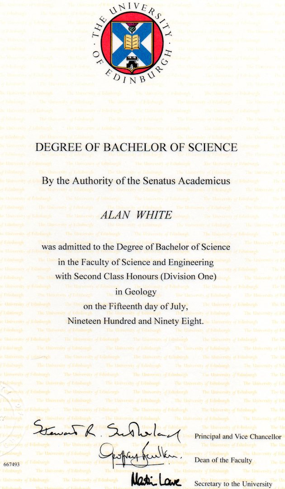
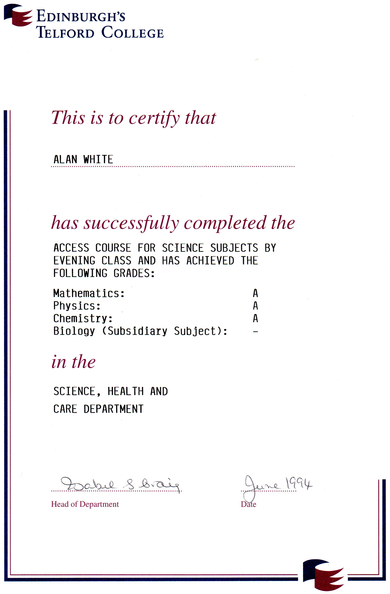

- Alan White
- born: 9th September 1967
- address: Glenrothes, Scotland
- email: alanwhitey@gmail.com
- mobile: 07971570832

Alan White
Software development student at CodeClan.
Edinburgh University, 1994 - 1998. BSc(hons), 2:1.
- 4th year:
- Igneous petrology
- Metamorphic petrology
- Mapping thesis on the Walls Peninsula, Shetland.
- 3rd year
- 2nd year
- Geology
- Geography
- Meteorology
- Oceanography
- 1st year
- Geology
- Geography
- Scottish History
University Certificates

